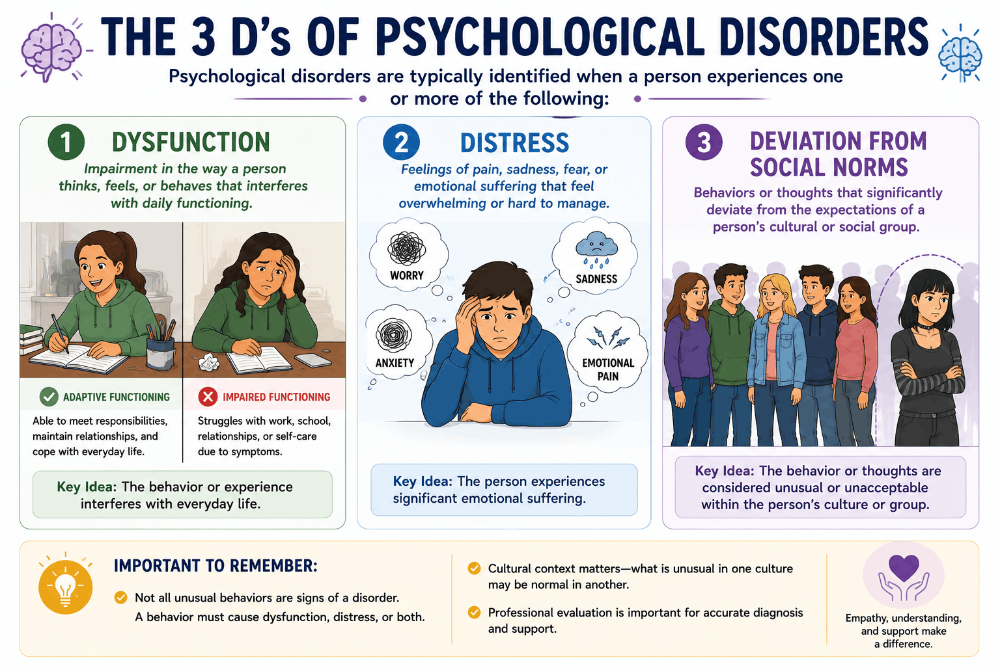

The Big Picture: Defining the Line Between Normal and Disordered
What exactly transforms a quirky behavior or an emotional struggle into a diagnosable psychological disorder? Mental health professionals rely on a combination of highly specific criteria and foundational perspectives to figure out where a normal behavior ends and a psychological disorder begins. In the real world, most psychologists employ an Eclectic Approach, using more than one psychological perspective when diagnosing and treating their clients, recognizing that the human mind is complex and multifaceted.
1.Identifying Psychological Disorders
Diagnosing a disorder is not about simply identifying a strange behavior. Professionals evaluate specific factors to determine if an individual's behaviors and mental processes cross the line into a disorder. These primarily include:
- Dysfunction
- This refers to thoughts, emotions, or behaviors that actively interfere with a person's ability to function effectively in their daily life. (Example: Having a phobia of germs that is so intense you cannot leave the house to go to work).
- Distress
- This is a state of significant emotional discomfort or suffering. A true disorder usually causes severe inner turmoil for the individual experiencing it.
- Deviation from Social Norms
- This occurs when an individual's thoughts, emotions, or behaviors significantly differ from culturally accepted expectations or rules of behavior within a group. It is important to note that Social Norms differ drastically across different cultures, so what is considered a "deviation" in one society might be perfectly normal in another.

2.The Diagnostic Tools and Their Consequences
Diagnosing psychological disorders requires specialized training and the strict use of evidence-based tools. The two primary manuals used worldwide are updated regularly to be responsive to new research and practice advances:
- Diagnostic and Statistical Manual of Mental Disorders (DSM)
- Developed by the American Psychiatric Association, this is the primary manual used in the United States to classify and diagnose mental disorders based on standardized criteria.
- International Classification of Mental Disorders (ICD)
- Developed by the World Health Organization, this system classifies diseases and health conditions, including mental and behavioral disorders, globally.
While assigning a clinical label to a patient can be incredibly helpful for creating a treatment plan, diagnosing or classifying psychological disorders has both positive and negative consequences. A formal diagnosis can unfortunately lead to Stigma (a negative label attached to individuals with disorders). This stigma is often compounded by cultural/societal norms and can intersect with systemic issues like Racism, Sexism, Ageism, and broad Discrimination, causing unfair prejudice toward the individual being diagnosed.
3.How Different Perspectives Explain Disorders
Psychologists use different theoretical lenses to understand the root causes of psychological disorders. While modern psychology heavily favors the integrated Biopsychosocial Approach, it is crucial to understand how each individual perspective explains psychopathology. Here is a breakdown of the major psychological perspectives and how they might analyze specific conditions:
- The Biological PerspectiveThe Medical Model
- This approach views psychological disorders as medical diseases with distinct physical, physiological, or biochemical causes. It looks for explanations in genetics, neurotransmitter imbalances, brain structure abnormalities, and evolutionary predispositions.
- Example: Schizophrenia is heavily analyzed through the biological lens. It is often explained by the Dopamine Hypothesis (an overactivity of dopamine receptors in the brain) and genetic predispositions passed down through families.
- The Psychodynamic Perspective
- Rooted in the work of Sigmund Freud, this approach argues that psychological disorders stem from unresolved, unconscious conflicts, often originating from childhood trauma. Symptoms are viewed as outward manifestations of the battle between the id, ego, and superego, or as extreme defense mechanisms failing to keep painful memories repressed.
- Example: Dissociative Identity Disorder (DID) can be explained as a massive, extreme defense mechanism. To protect the conscious mind from severe, unbearable childhood trauma, the ego fragments the personality into distinct identities to hold and isolate the traumatic memories.
- The Behavioral Perspective
- This perspective completely ignores the unconscious mind, arguing that all abnormal behavior is simply learned through the environment. Disorders are developed and maintained through classical conditioning (pairing associations), operant conditioning (reinforcement and punishment), or observational learning.
- Example: Specific Phobias are easily explained by classical conditioning. If a child is bitten by a dog, they pair the neutral stimulus (dog) with the unconditioned stimulus (pain), leading to a conditioned fear response. The fear is then maintained through operant conditioning (avoiding the dog brings relief, which negatively reinforces the avoidance).
- The Cognitive Perspective
- This approach focuses heavily on how we process information. It suggests that psychological distress is not caused directly by events, but rather by our irrational, maladaptive interpretations of those events. Faulty thinking patterns, negative schemas, and cognitive distortions fuel emotional disorders.
- Example: Major Depressive Disorder is often explained by the Cognitive Triad (a pattern of negative thoughts about oneself, the world, and the future) or through "learned helplessness," where an individual interprets setbacks as internal, stable, and completely unchangeable.
- The Humanistic Perspective
- Believing that humans are inherently good and driven toward self-actualization, this perspective explains disorders as the result of a blocked path to personal growth. If a person experiences a lack of unconditional positive regard, or if there is a massive gap between their "real self" and their "ideal self," they will experience psychological distress.
- Example: Generalized Anxiety Disorder (GAD) might be explained as a result of a person growing up with strict "conditions of worth." If they only received love when they met impossible standards, they may develop a chronic, underlying anxiety that they are never good enough and are always on the verge of losing approval.
- The Sociocultural Perspective
- This lens pulls back to look at the broader environment, emphasizing how systemic factors, cultural norms, socioeconomic status, prejudice, and societal expectations shape mental health. It argues that what is considered "abnormal" is highly dependent on the cultural context in which the person lives.
- Example: Eating Disorders (like Anorexia Nervosa) are highly correlated with sociocultural factors. They are significantly more prevalent in Western cultures that heavily promote and idealize extreme thinness in media, tying a person's social value and self-worth to an unrealistic body image.
- The Evolutionary Perspective
- This approach looks at psychological disorders through the lens of natural selection, proposing that many behaviors and mental processes we now consider "disordered" once served an adaptive purpose for our ancestors, or that they reduce the likelihood of survival when a normally protective system misfires in a modern environment.
- Example: Anxiety Disorders are sometimes explained through the "smoke detector principle": it was evolutionarily safer for our ancestors to have an oversensitive alarm system that triggered fear in response to ambiguous threats, even though that same system now produces chronic, disproportionate anxiety in a much safer modern world.
4.The Interaction Models
Because humans are complex, modern psychology often relies on comprehensive models that combine multiple elements rather than looking through just one lens:
- Biopsychosocial Model
- An approach that assumes any psychological problem potentially involves a combination of biological (genetics), psychological (thoughts/emotions), and sociocultural (environment/culture) factors.
- Diathesis-Stress Model
- This specific model assumes that mental disorders develop due to a combination of a genetic vulnerability (the diathesis) and stressful life experiences (the stress). Even if you have the genetic code for a disorder, it might never appear unless triggered by a traumatic or stressful event.
5.Don't Trip Up! (Common Misconceptions)
⚠️ Biopsychosocial vs. Diathesis-Stress: These two sound incredibly similar, but there is a key distinction to watch out for. The Biopsychosocial Model is a broad umbrella looking at the intersection of body, mind, and environment. The Diathesis-Stress Model specifically deals with a dormant genetic vulnerability (diathesis) that must be "turned on" or triggered by a specific environmental stressor.
6.Key Terms in This Topic
7.Practice This Topic
Test yourself on exactly what you just read, then mix it up with games and puzzles. The numbers on each button show how much material is waiting for you.
The same self-check questions that close your guided notes. Find out whether diagnosis and the perspectives on disorders stuck.
Start Quick Check →Flip through the key terms from this topic, including the DSM, the biopsychosocial model, and the diathesis-stress model.
Open the deck →AP-style multiple choice on identifying disorders, the DSM and ICD, perspectives, and interaction models, with an explanation after every answer.
Take the quiz →You're getting close to the end of Unit 5. Mix it up with games that review the whole unit.